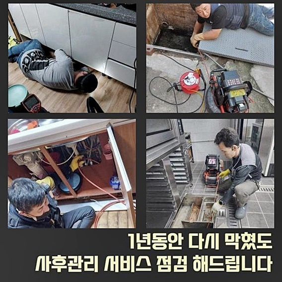
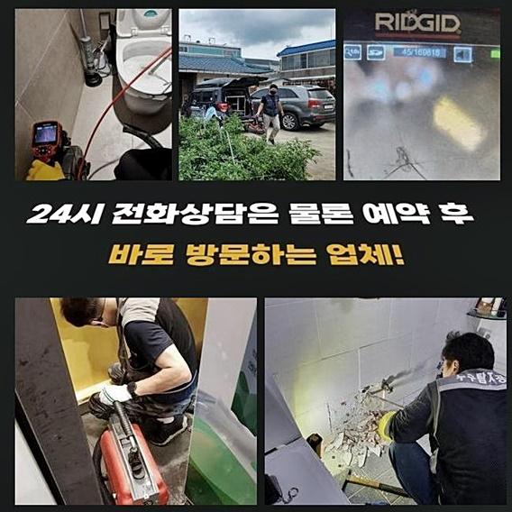
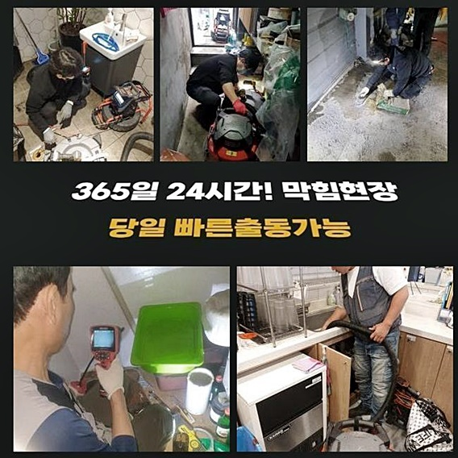
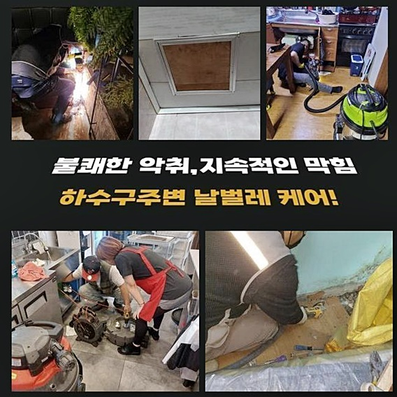
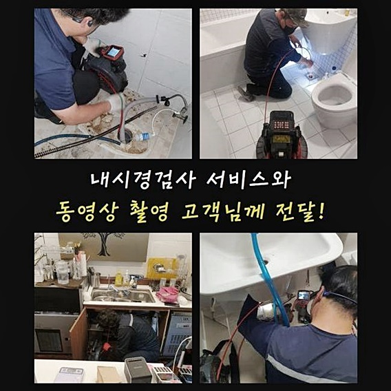
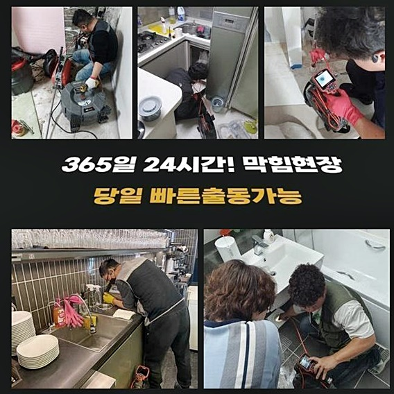

🏠 부천 원종동하수도뚫음 오정동 맨홀역류 출장설비
용인 하수구막힘 전문 시공 후기

📋 작업 개요
- 위치: 용인
- 서비스 유형: 하수구막힘, 배관막힘, 맨홀막힘, 역류해결, 뚫는업체, 배관청소, 고압세척
- 작업 일시: 2024. 8. 27. 6:52
- 업체명: 하수구수사대 (010-5615-2118)
🔍 문제 상황
하수시스템이 통수되지 않을시 배수관로 내시경기기를 써서 진단후 막혀버린 물길을 찾아내서 뚫어내는 일이 이뤄지게 됩니다
일상에서 발생하는 다량의 이물질로 외벽으로 나와있는 하수라인이 막혀버린 작업현장은 정확한 파악이후 수리가 시작됩니다
부천 원종동하수도뚫음 오정동 맨홀역류 출장설비
밖으로 위치한 배관들은 관만 봐도 단단한 모양이고 전구간이 복잡하기에 점검시작부터 통수시키는 스케일링작업들까지 난이도가 높은 작업들입니다
위의 사례와 같이 건물 외벽에 설치한 막힌현상으로 판단된다면 많은 경력이 요구되는 전문작업이 필요하기에 확실한 업체들을 알아보시고 작업들을 문의하시기 바랍니다
이번현장은 주차장안에 위치한 메인 배수관로가 꽉 막힌 사태가 일어난 곳입니다
우선 본관배수라인이 연결되어 있는 외벽의 하수관에 대한 점검작업들을 진행했습니다
주차장을 관리해주시는 분의 이야기로는 바깥쪽 하수시스템에서 주된 배관으로 오는데까지 전체 모두 막혀서 발생하는 문제가 매우 심하다고 이야기 해주셨습니다

🔎 원인 분석
💡 전문가 진단: 정밀 진단 장비를 사용하여 슬러지의 고착 여부를 판명하고 타격/세척 작업을 실시했습니다.
노폐물의 성격을 유추해냅니다
그후로는 주차장의 천장에 있는 배관들의 점검작업을 착수하려고 보니 작업위치가 높은탓에 작업환경이 갖추어지지 않아 단단한사다리 설치후 착수했습니다
위험한 부분없이 현장이 갖추어지면 일도 원활합니다
우선 천장을 가로지르는배관들은 저마다의 구조인데 막혀있는 배관들을 찿아내고, 파악한 위치로 안쪽을 비추는장비를 단계별로 사용하여서 관내부의 체증상태를 진단하고 불순물의 특징을 밝혀냅니다
진행과정에서 배관들 내부쪽으로 안을 볼수있는 선들을 이용하려면 배관에대한 작은구멍을 냅니다
활용해 케이블이 진입하는 최소의 크기로 뚫고나서 바로 내시경 장비를 넣어서 모든 라인의 스케일링과 파악을 실시하기로 했어요
모든과정이 완전히 종료되고 난 이후에 타공위치에 관하여 전문적인 되메우는 기술로 추후 발생할 수 있는 다른 오류에 큰걱정 하지않으셔도 돼요
이와같이 배관들 안쪽 노폐물의 상태를 규명해보았습니다
예상과같이 메인 배관의 모든 부분에 불순물이 형성 되어있는 상황이었고 외벽의 하수관들로 내려오는 지점까지 단단히 굳은 상당한 양의 찌꺼기가 이러한 상황을 야기시켰습니다

🔧 작업 과정
하수로의 벽면쪽에 노폐물이 엉겨붙어 이루어진 오래된 찌거기는 그위로 자꾸 불순물이 추가적으로 더해지며 두껍게 만들어지고 물들이 지나가는 배관들이 점점 좁혀지며 결국 막혀버립니다
스케일링 작업기계로 굳은 침전물을 분쇄하면서 배관을 청소합니다
문제발생 부위를 찾아가며 파악해보니 주된 배관시스템이 붙은 배관통로 부분쪽에 딱딱하게 축적된 침전물들을 보게되었습니다
특히 많은 양의 오염수가 지나가는 주요배관과 바깥 하수구들 안에는 쉽게 노폐물이 축적되고 석회화 되어버린 슬러지들 상태는 자연파쇄가 어렵고 모양도 크기에 정상적인 배수현상을 힘들게 하는 원인입니다
이와같이 하수구에 대한 샤프트기기를 이용한 작업과정으로 남는 잔여물이 없도록 하여 추후에 역류현상이 일어나는 경우들이 없겠죠
타공을 했던 메인 배수관으로 내부를 비추는 선을 밀어넣어 막힌 정도를 진단하고 오염물 제거과정에 착수하려 했지만 오늘처럼 관경이 크게 만들어진 배수관은 일반적인 장비들로 전문적인 해결이 어려워요
왜 그러냐 하면 전체적으로 작업의 진행이 이뤄지는데 이물질을 제거하는 기계와 흡입기는 각각의 구간들에 대하여 세심한 스케일링 작업들이 진행되기때문에 너비가 상당한 메인배수관에 작업들을 진행시키면 불필요한 에너지가 필요하게 되지요
이러한 경우에는 고압으로 세척을 해주는 장비들을 사용하여 순환되지 못하는 하수관을 해결합니다
종합적인 하수시스템의 모양에 맞춰 장치의 선이 들어갈 길을 정해두고 기기의 강한 힘으로 분사시키면서 노폐물이 굳어있는 벽면과 하수관 내부쪽를 세척하는 작업들이 가장 정확한 일처리입니다
강한 압력의 기기 사용이 반복적으로 진행되면서 노즐위치를 다양한 각도로 발사하고 강한 압의 물로 배관 내벽의 슬러지들을 파쇄합니다
퇴적된 오염원도 심각한 현장인데 메인역할을 하는 하수로의 특성상 불순물의 양도 많았기에 그냥 방치해 두었다면 하수배관이 막히는 현상이 자주 반복될거라 사료 되겠습니다
이후에 불편사항들이 생기지않게 전용 기기를 활용하여 잔여 노폐물이 없도록 구석구석 고압으로 세척을 마무리합니다
이처럼 모든 작업이 끝이나면 작은구멍을 만들었던 본관의 뚫려있는 부위를 본래의 상태로 메꾸는 작업들을 처리한 이후 모든 과정들을 완수하였습니다
추후에 배수관 문제로 어려움이 생기지 않게 꼼꼼하게 타공을 했던 부분을 다시 메꿨고 이후로 오염수가 흘러가는 데 있어서 불편함은 발생하지 않을것입니다


✅ 작업 완료
다음으로 혹시 또다른 문제들이 없었는지 순환이 원활하게 되는지 살펴보았고 중심이 되는 관에서부터 건물밖의 하수라인까지 막힘없이 빠른 시간내에 배수 가능한지 전부 확인하였습니다
배관내벽의 침식이 생활에서 발생되는 물질로 막힌다면 중요 메인관부터 건물밖의 하수라인까지 배수가 종합적으로 가능할수 없기에 이상발견 직후 전문가를 찾아보는게 해결책입니다
이상이 발견되면 외부의 도움없이 해결하는 것보다는 전문진의 경험과 알맞은 기계를 활용해서 원인을 살펴본후 플랙스샤프트 기기등을 적용시키는게 제일 완벽해요
막힌 문제가 시급하시면 편하게 연락주세요



⚠️ 하수구 배관 막힘 예방 및 관리 가이드
- ✅ 머리카락, 비닐, 물티슈 등 물에 분해되지 않는 이물질은 하수구 유입을 절대 금지해 주세요.
- ✅ 하수구 거름망을 씌우고 모여진 이물질은 주기적으로 쓰레기통에 바로 비워주셔야 합니다.
- ✅ 배관 노후가 심할 경우 이물질이 더 쉽게 걸리므로 주기적인 배관 세척(고압세척 등)을 권장합니다.
- ✅ 작업 후 1년 이내 재발 시 하수구수사대에서 무상 A/S 보증 서비스를 제공합니다.
💡 핵심 정리
- 확실한 장비 작업(내시경 점검 및 샤프트 스케일링)으로 원인을 뿌리 뽑습니다.
- 작업 후 1년 이내에 동일한 부위 재발 시 100% 무상 A/S 서비스를 보장합니다.
- 서울 · 경기 · 인천 전 지역에 24시간 언제든 긴급 출동할 수 있도록 항시 대기 중입니다.
❓ 자주 묻는 질문 (FAQ)
🚨 용인 하수구막힘 문제로 고민이신가요?
정확한 원인 진단과 확실한 시공으로 재발 없는 해결을 약속드립니다.
24시간 긴급 출동 | 서울 · 경기 · 인천 전지역 | 1년 내 재발 시 무상 A/S